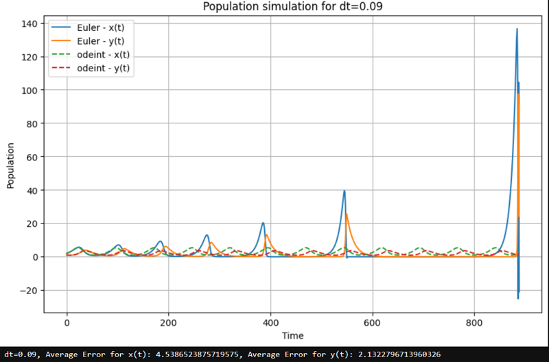
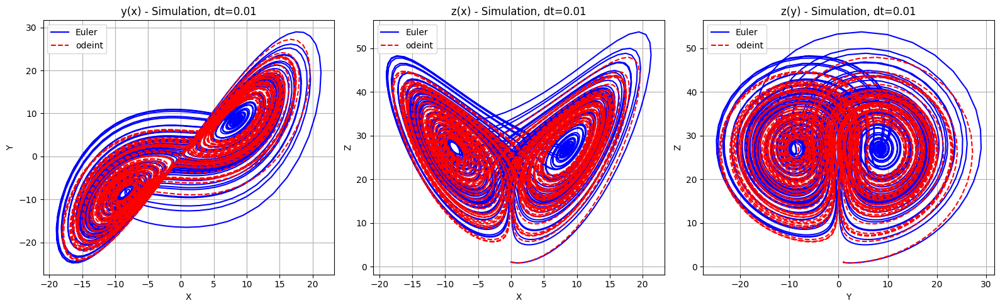

Porównanie metody Eulera i funkcji odeintPorównanie metody Eulera i funkcji odeint
Porównanie metody Eulera i funkcji odeintPorównanie metody Eulera i funkcji odeintBadanie koncentruje się na porównaniu dwóch metod rozwiązywania układów Lotki-Volterry i Lorenza: implementacji metody Eulera oraz wykorzystaniu pakietu scipy.
W pierwszej części przeprowadzono symulacje za pomocą metody Eulera. Dokonano porównania wyników dla różnych wartości kroku czasowego (dt). Wyniki zostały przeanalizowane i przedstawione graficznie w celu umożliwienia porównania zachowania układu dla różnych wartości dt.
W kolejnej części raportu wykorzystano inną metodę, korzystając z funkcji odeint z pakietu scipy.integrate. Dodatkowo, dla każdej wartości kroku czasowego użytej w metodzie Eulera, obliczono średni błąd aproksymacji względem wartości referencyjnych uzyskanych za pomocą metody odeint.
Ostateczne wnioski z niniejszego sprawozdania pozwolą na ocenę skuteczności obu metod symulacji oraz ich odporność na dobór kroku czasowego, co jest istotnym czynnikiem wpływającym na dokładność wyników.
$$ {\frac{dx}{dt} = ax - bxy} $$
$$ {\frac{dy}{dt} = (cx - d)y} $$
import numpy as np
import matplotlib.pyplot as plt
def euler_method(a, b, c, d, x0, y0, dt, steps):
x_values = [x0]
y_values = [y0]
for _ in range(steps):
dx_dt = a * x_values[-1] - b * x_values[-1] * y_values[-1]
dy_dt = c * x_values[-1] * y_values[-1] - d * y_values[-1]
x_new = x_values[-1] + dx_dt * dt
y_new = y_values[-1] + dy_dt * dt
x_values.append(x_new)
y_values.append(y_new)
return x_values, y_values
# Funkcja obliczająca średni błąd aproksymacji
def calculate_average_error(true_values, approx_values):
errors = np.abs(true_values - approx_values)
return np.mean(errors)
# Parametry
a = 1.2
b = 0.6
c = 0.3
d = 0.8
# Populacje początkowe
x0 = 2
y0 = 1
# Lista różnych wartości kroku dt
dt_values = [0.1, 0.05, 0.01]
# Wyniki metody Eulera dla różnych wartości kroku dt
for dt in dt_values:
steps = int(80 / dt)
x_values, y_values = euler_method(a, b, c, d, x0, y0, dt, steps)
plt.figure(figsize=(10, 6))
plt.plot(x_values, label='Euler - x(t)')
plt.plot(y_values, label='Euler - y(t)')
plt.title(f'Symulacja populacji dla dt={dt}')
plt.xlabel('Czas')
plt.ylabel('Populacja')
plt.legend()
plt.grid(True)
plt.show()
import numpy as np
import matplotlib.pyplot as plt
from scipy.integrate import odeint
def euler_method(a, b, c, d, x0, y0, dt, steps):
x_values = [x0]
y_values = [y0]
for _ in range(steps):
dx_dt = a * x_values[-1] - b * x_values[-1] * y_values[-1]
dy_dt = c * x_values[-1] * y_values[-1] - d * y_values[-1]
x_new = x_values[-1] + dx_dt * dt
y_new = y_values[-1] + dy_dt * dt
x_values.append(x_new)
y_values.append(y_new)
return x_values, y_values
# Funkcja obliczająca średni błąd aproksymacji
def calculate_average_error(true_values, approx_values):
errors = np.abs(true_values - approx_values)
return np.mean(errors)
# Parametry
a = 1.2
b = 0.6
c = 0.3
d = 0.8
# Początkowe populacje
x0 = 2
y0 = 1
# Lista różnych wartości kroków dt
dt_values = [0.05, 0.01, 0.001]
# Wyniki metody Eulera dla różnych wartości kroku dt
for dt in dt_values:
steps = int(80 / dt)
x_values_euler, y_values_euler = euler_method(a, b, c, d, x0, y0, dt, steps)
# Rozwiązanie z pomocą odeint
def model(z, t):
x, y = z
dx_dt = a * x - b * x * y
dy_dt = c * x * y - d * y
return [dx_dt, dy_dt]
t = np.linspace(0, 80, steps + 1)
z0 = [x0, y0]
z_odeint = odeint(model, z0, t)
x_values_odeint = z_odeint[:, 0]
y_values_odeint = z_odeint[:, 1]
plt.figure(figsize=(10, 6))
plt.plot(x_values_euler, label='Euler - x(t)')
plt.plot(y_values_euler, label='Euler - y(t)')
plt.plot(x_values_odeint, label='odeint - x(t)', linestyle='--')
plt.plot(y_values_odeint, label='odeint - y(t)', linestyle='--')
plt.title(f'Population simulation for dt={dt}')
plt.xlabel('Time')
plt.ylabel('Population')
plt.legend()
plt.grid(True)
plt.show()
error_x = calculate_average_error(x_values_odeint, x_values_euler)
error_y = calculate_average_error(y_values_odeint, y_values_euler)
print(f"dt={dt}, Average Error for x(t): {error_x}, Average Error for y(t): {error_y}")
dt=0.09, Average error for x(t): 4.5386523875719575, Average error for y(t): 2.1322796713960326
dt=0.075, Average error for x(t): 2.699332651223852, Average error for y(t): 1.9305765727495827
dt=0.05, Average Error for x(t): 2.4437596140948665, Average Error for y(t): 1.583412638014361
dt=0.01, Average Error for x(t): 0.8149373464424021, Average Error for y(t): 0.5055264320468017
dt=0.001, Average Error for x(t): 0.06583244461491997, Average Error for y(t): 0.04060824939869479
| dt | Średni błąd dla x(t) | Średni błąd dla y(t) | Średnia (x(t), y(t)) |
|---|---|---|---|
| 0.09 | 4.5386523875719575 | 2.1322796713960326 | 3.335466029484995 |
| 0.075 | 2.699332651223852 | 1.9305765727495827 | 2.3149546119867175 |
| 0.05 | 2.4437596140948665 | 1.583412638014361 | 2.013586126054614 |
| 0.01 | 0.8149373464424021 | 0.5055264320468017 | 0.6602318892446019 |
| 0.001 | 0.06583244461491997 | 0.04060824939869479 | 0.05322034700680738 |
import numpy as np
import matplotlib.pyplot as plt
from scipy.integrate import odeint
def euler_method(sigma, rho, beta, x0, y0, z0, dt, steps):
x_values = [x0]
y_values = [y0]
z_values = [z0]
for _ in range(steps):
dx_dt = sigma * (y_values[-1] - x_values[-1])
dy_dt = x_values[-1] * (rho - z_values[-1]) - y_values[-1]
dz_dt = x_values[-1] * y_values[-1] - beta * z_values[-1]
x_new = x_values[-1] + dx_dt * dt
y_new = y_values[-1] + dy_dt * dt
z_new = z_values[-1] + dz_dt * dt
x_values.append(x_new)
y_values.append(y_new)
z_values.append(z_new)
return x_values, y_values, z_values
# Funkcja obliczająca średni błąd aproksymacji
def calculate_average_error(true_values, approx_values):
errors = np.abs(true_values - approx_values)
return np.mean(errors)
# Parametry modelu Lorenza
sigma = 10
rho = 28
beta = 8/3
# Początkowe warunki
x0 = 0
y0 = 1
z0 = 1.05
# Lista różnych wartości kroku czasowego dt
dt_values = [ 0.04, 0.02, 0.01, 0.001]
# Wyniki dla metody Eulera dla różnych wartości dt
for dt in dt_values:
steps = int(80 / dt)
x_values_euler, y_values_euler, z_values_euler = euler_method(sigma, rho, beta, x0, y0, z0, dt, steps)
# Rozwiązanie za pomocą odeint
def model(state, t):
x, y, z = state
dx_dt = sigma * (y - x)
dy_dt = x * (rho - z) - y
dz_dt = x * y - beta * z
return [dx_dt, dy_dt, dz_dt]
t = np.linspace(0, 80, steps + 1)
state0 = [x0, y0, z0]
state_odeint = odeint(model, state0, t)
x_values_odeint = state_odeint[:, 0]
y_values_odeint = state_odeint[:, 1]
z_values_odeint = state_odeint[:, 2]
fig = plt.figure(figsize=(16, 5))
# Wykres y(x)
plt.subplot(1, 3, 1)
plt.plot(x_values_euler, y_values_euler, label='Euler', color='blue')
plt.plot(x_values_odeint, y_values_odeint, label='odeint', color='red', linestyle='--')
plt.title(f'y(x) - Simulation, dt={dt}')
plt.xlabel('X')
plt.ylabel('Y')
plt.legend()
plt.grid(True)
# Wykres z(x)
plt.subplot(1, 3, 2)
plt.plot(x_values_euler, z_values_euler, label='Euler', color='blue')
plt.plot(x_values_odeint, z_values_odeint, label='odeint', color='red', linestyle='--')
plt.title(f'z(x) - Simulation, dt={dt}')
plt.xlabel('X')
plt.ylabel('Z')
plt.legend()
plt.grid(True)
# Wykres z(y)
plt.subplot(1, 3, 3)
plt.plot(y_values_euler, z_values_euler, label='Euler', color='blue')
plt.plot(y_values_odeint, z_values_odeint, label='odeint', color='red', linestyle='--')
plt.title(f'z(y) - Simulation, dt={dt}')
plt.xlabel('Y')
plt.ylabel('Z')
plt.legend()
plt.grid(True)
plt.tight_layout()
plt.show()
fig = plt.figure(figsize=(12, 8))
ax = fig.add_subplot(111, projection='3d')
ax.plot(x_values_euler, y_values_euler, z_values_euler, label='Euler', color='blue')
ax.plot(x_values_odeint, y_values_odeint, z_values_odeint, label='odeint', color='red', linestyle='--')
ax.set_title(f'Simulation for dt={dt}')
ax.set_xlabel('X')
ax.set_ylabel('Y')
ax.set_zlabel('Z')
ax.legend()
plt.show()
error_x = calculate_average_error(x_values_odeint, x_values_euler)
error_y = calculate_average_error(y_values_odeint, y_values_euler)
error_z = calculate_average_error(z_values_odeint, z_values_euler)
print(f"dt={dt}, Average Error for X: {error_x}, Average Error for Y: {error_y}, Average Error for Z: {error_z}")dt=0.04, Average Error for X: nan, Average Error for Y: nan, Average Error for Z: nan
dt=0.02, Average Error for X: 9.160473319570897, Average Error for Y: 10.394051377529555, Average Error for Z: 9.452990585686898

dt=0.01, Average Error for X: 8.581482374633888, Average Error for Y: 9.601881745806123, Average Error for Z: 9.22120213881979
dt=0.001, Average Error for X: 6.946460771812238, Average Error for Y: 7.857654961620313, Average Error for Z: 7.920956509955428
| dt | Średni błąd dla X | Średni błąd dla Y | Średni błąd dla Z | Średnia (x, y, z) |
|---|---|---|---|---|
| 0.02 | 9.160473319570897 | 10.394051377529555 | 9.452990585686898 | 9.33583876059685 |
| 0.01 | 8.581482374633888 | 9.601881745806123 | 9.22120213881979 | 9.134522419753267 |
| 0.001 | 6.946460771812238 | 7.857654961620313 | 7.920956509955428 | 7.575357414462326 |
Analizując dane dotyczące średnich błędów dla różnych wartości kroku czasowego dt dla metod symulacji przy użyciu metody Eulera i odeint, można wyciągnąć następujące wnioski:
Na podstawie danych dotyczących średnich błędów dla różnych wartości kroku czasowego dt w symulacji systemu Lorenza, można wyciągnąć następujące wnioski:
Metoda odeint jest bardziej dokładną metodą numeryczną niż metoda Eulera w przypadku symulacji dynamiki układów fizycznych, szczególnie dla większych wartości kroku czasowego. Dla małych wartości dt, różnice pomiędzy obiema metodami są mniejsze, ale nadal metoda odeint może zapewniać lepszą dokładność i stabilność.